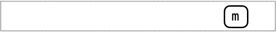
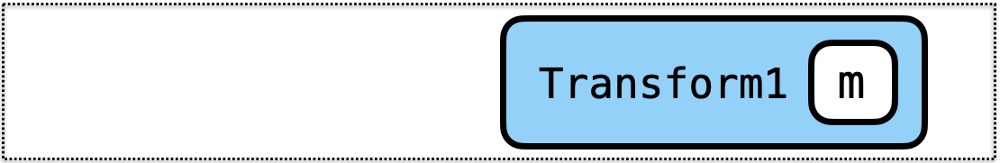
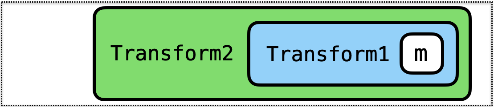
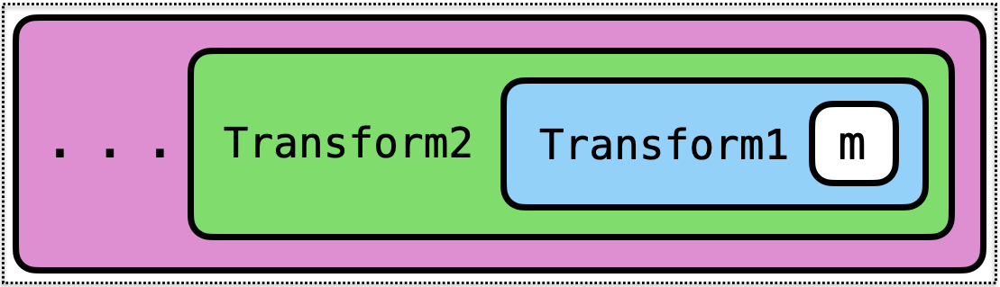
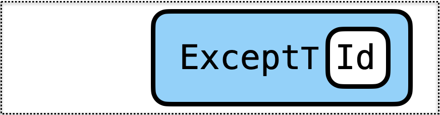
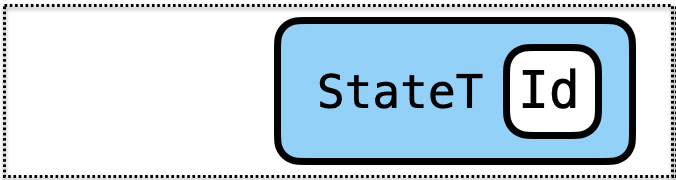
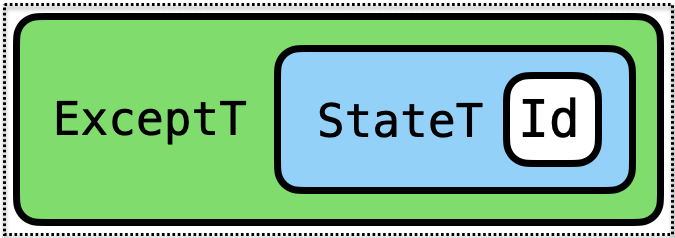

Outline
- Generalizing Exception Handling
- Generalizing Mutable State
- Combining Exception Handling and Mutable State
Exception Handling
Recall our expressions with division
data Expr
= Num Int
| Plus Expr Expr
| Div Expr ExprWe had a potentially crashing evaluator
eval :: Expr -> Int
eval (Number n) = n
eval (Plus e1 e2) = eval e1 + eval e2
eval (Div e1 e2) = eval e1 `div` eval e2
-- >>> eval (Div (Val 10) (Plus (Number 5) (Number (-5))))
-- Exception: Divide by zero
Exception Handling with Either
We used the standard library type Either, which is an instance of Monad
type Result a = Either String a
eval :: Expr -> Result Int
eval (Num v) = return v
eval (Plus e1 e2) = do
v1 <- eval e1
v2 <- eval e2
return (v1 + v2)
eval (Div e1 e2) = do
v1 <- eval e1
v2 <- eval e2
if v2 == 0
then Left ("DBZ " ++ show e2)
else return (v1 `div` v2)This doesn’t crash but returns a Left
>>> eval (Div (Number 10) (Plus (Number 5) (Number (-5))))
Left "DBZ: Plus (Number 5) (Number (-5))"And when it succeeds it returns a Right
>>> eval (Div (Number 10) (Plus (Number 5) (Number 5)))
Right 1
Exception Handling Monads
This implementation is specific to Either:
eval (Div e1 e2) =
do
...
if v2 == 0
then Left ("DBZ " ++ show e2) -- using Left here!
else return (v1 `div` v2)We would like to generalize this to any monad that provides two methods:
throwError(with some value)catchError(and use its value)
Let’s first implement these functions for Either
1. Throwing an Exception
We can simply define
throwError :: e -> Either e a
throwError exn = Left exnand rewrite the Div case:
eval (Div e1 e2) =
do
...
if v2 == 0
then throwError ("DBZ " ++ show e2) -- using a general function
else return (v1 `div` v2)
2. Catching an Exception
What does it mean to catch an exception?
Lets change our Expr type to
data Expr
= Num Int
| Plus Expr Expr
| Div Expr Expr
| Try Expr -- Try to evaluate an expression,
-- but if it fails, return 0We would like to implement eval for Try as follows:
eval (Try e) = catchError (eval e) (\_ -> return 0)
-- ^ this is the computation that might fail
-- ^ this is the handler
-- (might depend on the exception!)
QUIZ
With this implementation of eval:
eval :: Expr -> Either String Int
eval (Try e) = catchError (eval e) (\_ -> return 0)What should the type of catchError be?
A. Either e a -> (a -> Either e b) -> Either e b
B. Either e a -> (e -> Either e b) -> Either e b
C. Either e a -> (e -> Either e a) -> Either e a
D. Either e a -> Either e a -> Either e a
E. Either e a -> Either e b -> Either e b
Implementing catch
Lets implement the catch function!
catch :: Either e a -> (e -> Either e a) -> Either e a
catch (Left e) handler = ???
catch (Right a) handler = ???
QUIZ
eval (Num v) = return v
eval (Plus e1 e2) = ...
eval (Div e1 e2) = do ...
if v2 == 0
then Left ("DBZ " ++ show e2)
else return (v1 `div` v2)
eval (Try e) = catchError (eval e) (\_ -> return 0)
catchError (Left e) handler = handler e
catchError (Right a) _ = Right a
e1 = Div (Number 10) (Plus (Number 5) (Number (-5)))
quiz = eval (Try e1)What does quiz evaluate to?
A. Right 0
B. Left 0
C. Left "DBZ: (Plus (Number 5) (Number (-5)))"
A Class for Exception Handling Monads
The class MonadError e m defined in Control.Monad.Except says
mis a Exception-Handling monad with exception typee
class Monad m => MonadError e m where
throwError :: e -> m a
catchError :: m a -> (e -> m a) -> m aThat is to say, m implements
>>=andreturnoperations specified byMonadandthrowErrorandcatchErroroperations specified byMonadError!
Generalizing the DBZ Evaluator
Now we can generalize our DBZ evaluator to work with any MonadError!
-- | Attention: new type!
eval :: (MonadError String m) => Expr -> m Int
eval (Num v) = ...
eval (Plus e1 e2) = ...
eval (Div e1 e2) = do
v1 <- eval e1
v2 <- eval e2
if v2 == 0
then throwError ("DBZ " ++ show e2)
else return (v1 `div` v2)
eval (Try e) = catchError (eval e) (\_ -> return 0)
Running the Generalized Evaluator
Lets try to run it!
>>> eval e0
error: Ambiguous type variable ‘m0’...What is the problem?
evalis now polymorphic inm(does not know whichmto use)- similar to the
read "2"problem we saw earlier - we need to tell GHC which instance of
MonadErrorto use - we know just the guy for the job:
Either String!
For example, we can add an annotation:
>>> eval e0 :: Either String Int
Right 3
Or use it in context:
topEval :: Expr -> String
topEval e = case eval e of
Left s -> "Error: " ++ s
Right v -> "Ok: " ++ show v
>>> topEval (Div (Number 10) (Plus (Number 5) (Number 5)))
"Ok: 1"
>>> topEval (Div (Number 10) (Plus (Number 5) (Number (-5))))
"Error: DBZ (Plus (Number 5) (Number (-5)))"
Outline
- Generalizing Exception Handling [done]
- Generalizing Mutable State
- Combining Exception Handling and Mutable State
Mutable State
Recall our expression with a counter:
data Expr
= Num Int
| Plus Expr Expr
| Next
-- 0
Next
==> 0
-- 0 1
Plus Next Next
==> 1
-- 0 1 2
Plus Next (Plus Next Next)
==> 3
Counting with State
We used the standard library type State, which is an instance of Monad
type Cnt = Int
type Counting a = State Cnt a
eval :: Expr -> Counting Int
eval (Num n) = return n
eval (Plus e1 e2) = do v1 <- eval e1
v2 <- eval e2
return (v1 + v2)
eval Next = do
cnt <- get
_ <- put (cnt + 1)
return (cnt)
A Class for Mutable State Monads
Just like exception handing, threading mutable state is a common pattern!
So let’s define a class for it!
The class MonadState s m defined in the Control.Monad.State says
mis a State-Threading monad with state types
class Monad m => MonadState s m where
get :: m s
put :: s -> m ()That is to say, m implements
>>=andreturnoperations specified byMonadandgetandputoperations specified byMonadState!
Generalizing the Counting Evaluator
So we can generalize our counting evaluator to work with any MonadState!
-- | Attention: new type!
eval :: (MonadState Cnt m) => Expr -> m Int
eval (Num n) = return n
eval (Plus e1 e2) = do v1 <- eval e1
v2 <- eval e2
return (v1 + v2)
eval Next = do
cnt <- get
_ <- put (cnt + 1)
return (cnt)And define a topEval function that tells GHC to use State:
- because
evalState :: State s a -> s -> a
topEval :: Expr -> Int
topEval e = evalState (eval e) 0
>>> topEval (Plus Next Next)
1
>>> topEval (Plus Next (Plus Next Next))
3
What was the point of generalizing the evaluators?
- We could now use a different
MonadError(notEither) - We could now use a different
MonadState(notState) - But the coolest thing is that we can now combine them!
Outline
- Generalizing Exception Handling [done]
- Generalizing Mutable State [done]
- Combining Exception Handling and Mutable State
A Fancy Evaluator
What if I want Exceptions and Mutable State?
data Expr
= Num Int
| Plus Expr Expr
| Div Expr Expr -- Needs exceptions
| Next -- Needs state
-- omitting Try for simplicity
It would be great if we could just mesh the two evaluators together!
eval (Num n) = return n
eval (Plus e1 e2) = do v1 <- eval e1
v2 <- eval e2
return (v1 + v2)
-- This case is from the DBZ evaluator:
-- it uses `throwError`!
eval (Div e1 e2) = do
v1 <- eval e1
v2 <- eval e2
if v2 == 0
then throwError ("DBZ " ++ show e2)
else return (v1 `div` v2)
-- This case is from the Counting evaluator:
-- it uses `get` and `put`!
eval Next = do
cnt <- get
_ <- put (cnt + 1)
return (cnt)
But what type should eval have?
eval :: Expr -> ??? Int
QUIZ
What should be the type of eval for the Fancy evaluator?
-- (A)
eval :: Expr -> State Cnt (Either String Int)
-- (B)
eval :: Expr -> Either String (State Cnt Int)
-- (C)
eval :: (MonadState Cnt m) => Expr -> m Int
-- (D)
eval :: (MonadError String m) => Expr -> m Int
-- (E)
eval :: (MonadState Cnt m, MonadError String m) => Expr -> m Int
Composing Constraints
This is the best part about generalizing: constraints compose!
-- The type has both constraints we need:
eval :: (MonadState Cnt m, MonadError String m) => Expr -> m Int
eval (Num n) = ...
eval (Plus e1 e2) = ...
-- We can use `throwError` because `m` is a `MonadError`!
eval (Div e1 e2) = do
...
if v2 == 0
then throwError ("DBZ " ++ show e2)
else return (v1 `div` v2)
-- We can use `get` and `put` because `m` is *also* a `MonadState`!
eval Next = do
cnt <- get
_ <- put (cnt + 1)
return cnt
Running the Fancy Evaluator
All is well until we try to run it:
>>> eval (Div (Num 3) Next)
error: ambiguous type variable ‘m0’...
We are in a pickle:
- We need a monad
mthat is both aMonadStateand aMonadError Stateis not our guy (why?)Eitherisn’t either (why?)- Do we need to implement a new monad from scratch? :(
Monad Transformers to the rescue!
Mixing Monads with Transformers
Start with a Basic Monad

m implements
- no special operations
Transform it to add some Capabilities

Transform1 m implements
moperations and- operations added by
Transform1
Transform again to add more Capabilities

Transform2 (Transform1 m) implements
moperations and- operations added by
Transform1and - operations added by
Transform2
… And so on

Transform3 (Transform2 (Transform1 m)) implements
moperations and- operations added by
Transform1and - operations added by
Transform2and - operations added by
Transform3…
Reminiscent of the Decorator Design Pattern or Python’s Decorators.
A Basic Monad
First, lets make a basic monad
- only implements
>>=andreturn - adds no effects to the computation
- just a wrapper around a value of type
a
data Identity a = Id a
EXERCISE: Monad Instance for Identity
Implement the Monad instance for Identity:
data Identity a = Id a
instance Monad Identity where
return a = ???
x >>= f = ???
A Basic Monad
First, lets make a basic monad
- only implements
>>=andreturn - adds no effects to the computation
- just a wrapper around a value of type
a
data Identity a = Id a
instance Monad Identity where
return a = Id a
(Id a) >>= f = f a
Adding Exception Capabilities
The transformer ExceptT e m defined in Control.Monad.Except
- takes as input a monad
mand - transforms it into a new monad
m'
such that m' implements
- all the operations that
mimplements - and adds exception-handling capabilities
- that is, it can
throwErrorandcatchError
In other words:
ExceptT e msatisfies the constraint(MonadError e (ExceptT e m))
DBZ Evaluator using transformers
For example, we could give our (non-generalized) DBZ evaluator the type:
-- instead of: type Result a = Either String a
type Result a = ExceptT String Identity a
eval :: Expr -> Result Int
...
Running Transformers
If we run this evaluator, we get:
>>> eval e0
ExceptT (Id (Right 3))The result is wrapped in all these layers of monads…
Each monad/transformer M provides a function runM that “unwraps” the results:
runIdentity :: Identity a -> a
runExceptT :: ExceptT e m a -> m (Either e a)So we can do:
>>> runIdentity (runExceptT (eval e0))
Right 3
Adding State Capabilities
The transformer StateT s m defined in the Control.Monad.State
- takes as input monad
mand - transforms it into a new monad
m'
such that m' implements
- all the operations that
mimplements - and adds state-threading capabilities
- e.g. it can
getandputthe state
In other words:
StateT s msatisfies the constraint(MonadState s (StateT s m))
Counting Evaluator Using Transformers
For example, we could give our (non-generalized) DBZ evaluator the type:
-- instead of: type Counting a = State Int a
type Counting a = StateT Int Identity a
eval :: Expr -> Counting Int
...
And we can run it using runStateT (or evalStateT):
runStateT :: StateT s m a -> s -> m (a, s)
evalStateT :: StateT s m a -> s -> m a
>>> runIdentity (runStateT (eval (Plus Next Next)) 0)
(1,2)
>>> runIdentity (evalStateT (eval (Plus Next Next)) 0)
1
Fancy Evaluator Using Transformers
We can stack both transformers on top of each other!
type Fancy a = ExceptT String (StateT Cnt Identity) a
EXERCISE: Running Fancy
type Fancy a = ExceptT String (StateT Cnt Identity) aLets write a function
runFancy :: Fancy a -> Either String a
runFancy x = ???such that
>>> runFancy (eval (Div (Num 3) (Plus Next Next)))
Right 3
>>> >>> runFancy (eval (Div (Num 3) Next))
Left "DBZ: Next"
Summary: Mixing Monads with Many Features
1. Transformers add capabilities to Monads
Transform2 (Transform1 m) implements
moperations and- operations added by
Transform1and - operations added by
Transform2
2. StateT and ExceptT add State and Exceptions
- Start with a basic monad
Identity - Use
StateT Intto add global-Intstate-update capabilities - Use
ExceptT Exprto add exception-handling capabilities
Play around with this in your homework assignment!